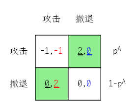
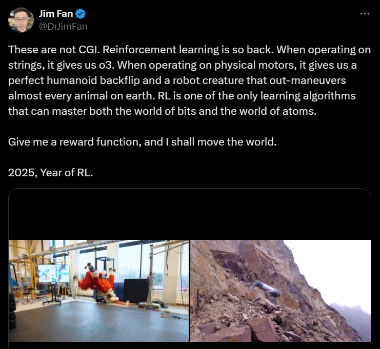
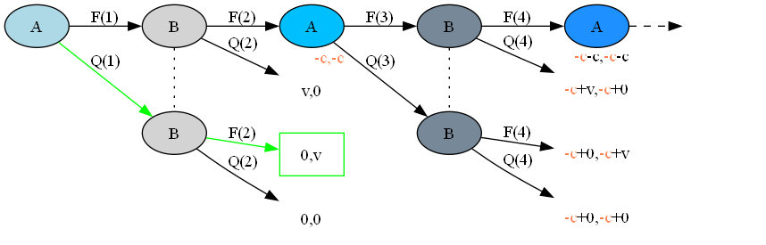
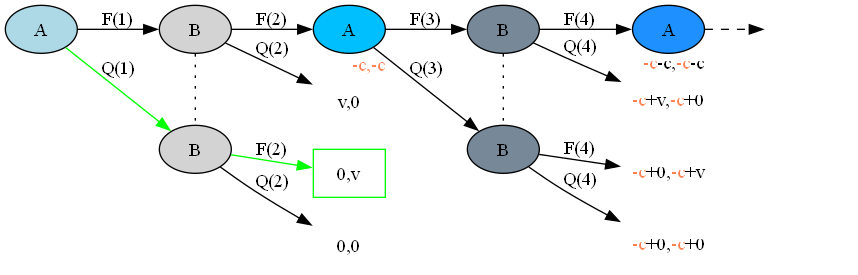

寻找最优策略
最优控制,机器学习与机器人
忻斌健
系统部人工智能组
2024年12月27日
目标
- 最优控制和机器学习的共同基础
- 决策问题程序化
- 通过学习的方式获得最优决策
一个简单的决策问题
1.1 对决
游戏(博弈)
- 游戏的要素:
- 玩家
- 收益(代价,奖励)
- 策略
- 游戏的趣味：复杂，难度，平衡
对决
1.2 势均力敌

?
1.3 混合策略

- 对手攻击收益：\(\color{red}{PO^{f}=(-1)\times p^{A} + (2)\times (1-p^{A})}\)
- 对手撤退收益：\(\color{blue}{PO^{q}=(0)\times p^{A} + (0)\times (1-p^{A})}\)
- \(p^{A}=0.5\) ?
- 我方收益 -0.5:1
- 对手收益：0.5:0
\(p^A\) 何时最优?
👉 让对方失去选择, 对\(\forall\hspace{0.5em}p^{B}\)
混合策略
- 我方策略:\(\color{red}{PO^{f}}=\color{blue}{PO^{q}}\) 👉 \(p^{A}=\frac{2}{1+2}=\frac{2}{3}\)
- 收益？
- 均衡策略: 我方收益 \(-\frac{2}{3}\times p^{B} + \frac{4}{3}\times (1-p^{B})\)
- \(p^{A}=1\)?
理性决策优于非理性决策
混合策略的均衡是对双方最合理的最优状态
随机策略优于确定策略
混合策略

- 多轮持续对决？
1.4 在时间的长河里
决策树

1.5 持续对决
- 逐级倒推: 从最后一轮开始分析
- 攻击发生概率 \(\mathcal{P}=\frac{v}{v+c}: \frac{2}{3}\searrow 0, \textrm{if}\quad v: 2\searrow 0\)
- 价值函数：当前决策和状态的长期价值
最优控制，强化学习与机器人
2.1 回顾
十年前
最优控制
强化学习

2.2 模型
| 博弈 | 玩家 | 收益 (代价) |
策略 | 状态 | 策略评估 |
|---|---|---|---|---|---|
| 强化学习 | 智能体/ 系统 |
奖励 | 作用 | 状态 | 价值函数 |
| 最优控制 | 控制器/ 对象 |
误差 | 控制量 | 状态 | 目标函数 |
2.3 强化学习的方法
分步骤解决复杂问题
“如给定现在，未来与过去无关”
👉 马尔可夫决策过程
复杂问题可分解为子问题
👉 动态规划
从碎片化的经验中估计状态和行动价值
👉 贝尔曼方程
理性决策
- 算法是理性决策
- 理性决策针对非理性决策是优势策略
2.4 从碎片化经验中学习
随机采样
 

随机采样的好处
- 真实的数据
- 建模的复杂度过高
- 复杂函数/分布：
- 非线性
- 时变过程与非平稳过程
- 自然规律
- 处理复杂问题的高效方式
- 可以从碎片化的经验中学习
2.5 模型复杂度
AlphaGo的状态和决策树

- 价值: 可理解为胜率
AlphaGo的状态和决策树
AlphaGo的复杂度
- 所有的位置（观测量） \(3^{{19}^2}\approx 1.74\times 10^{172}\), \(1.20\%\) 合法
- 平均~200步/局，不同棋局的平均数量 \(~3\times 10^{511}\)
- 理论最长步数 \(10^{48}\), 不同棋局的数量:\([10^{10^{48}},10^{10^{171}}]\)
可观测宇宙的原子个数 \(10^{80}\)
👉 神经网络
双足机器人的状态和复杂度
复杂对象的控制方式:
最优控制
强化学习
如何学习?
2.6 机器人的机器学习
- 每次演示是决策树上的一条路径
- 随机采样的数据密度
- 成功或失败的经验
仿真的作用

图1 抓取

图2 定位

图3 操作
用于训练的仿真数据
机器人学习的算法
- 数据
- 来源:在线/离线/(仿真)
- 预训练(基础模型GPT)
- 数据范式(训练规划/数据/多样性构造)
- 学习模型
- 鲁棒性
- 多样性
2.7 理解AlphaGo
AlphaGo系统结构
- 碎片化经验学习
- 部分经验累积 👉 神经网络
- 不完整经验累积 👉 在线学习
- 随机和概率是应对复杂现象的有效模型
- 价值网络: 可理解为简单的胜率查找表
最优策略
- 均衡策略
- 混合策略的均衡是对双方最合理的最优状态
- 理性决策优于非理性决策
- 自我训练/自我学习
- 不断提升水平
→ 均衡状态(最优策略)
总结
- 最优策略
- 最优决策必须要考虑对手的决策
- 机器学习
- 随机采样是应对复杂问题的高效方法 随机采样是应对复杂问题的高效方法
- 神经网络
- 随机和概率是应对复杂现象的有效模型